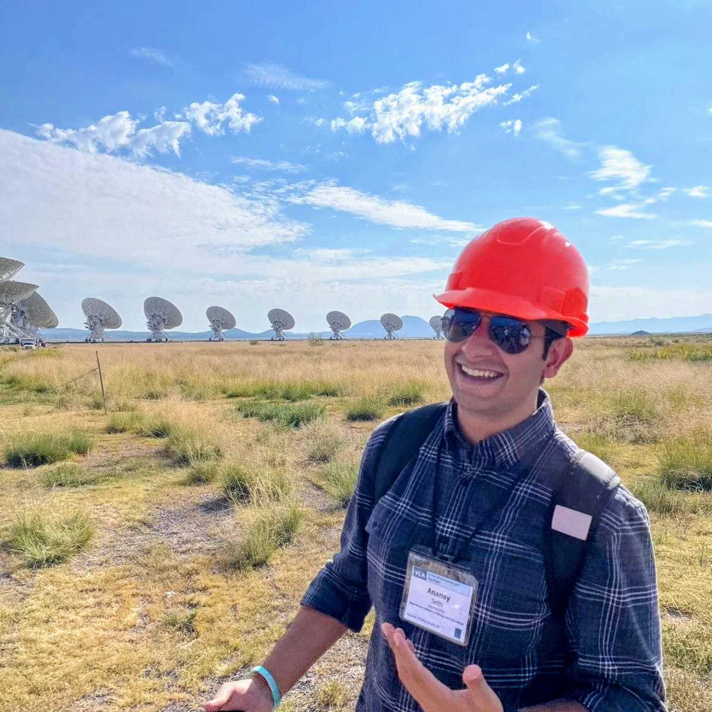
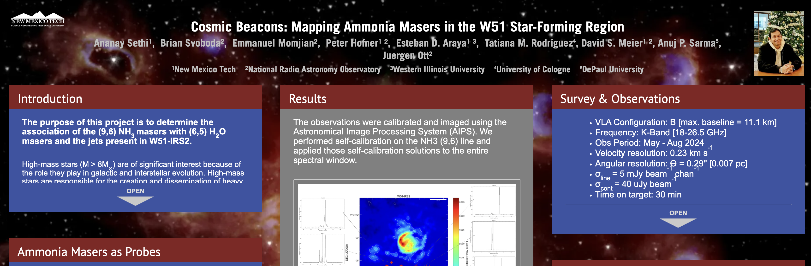
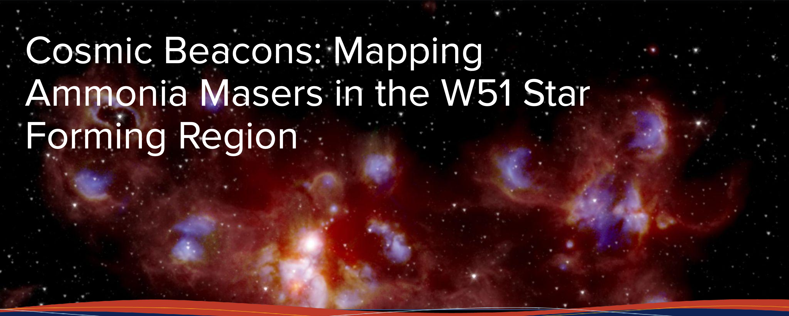
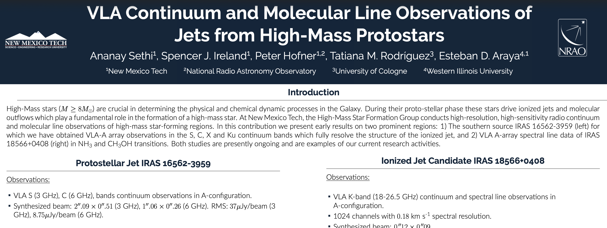
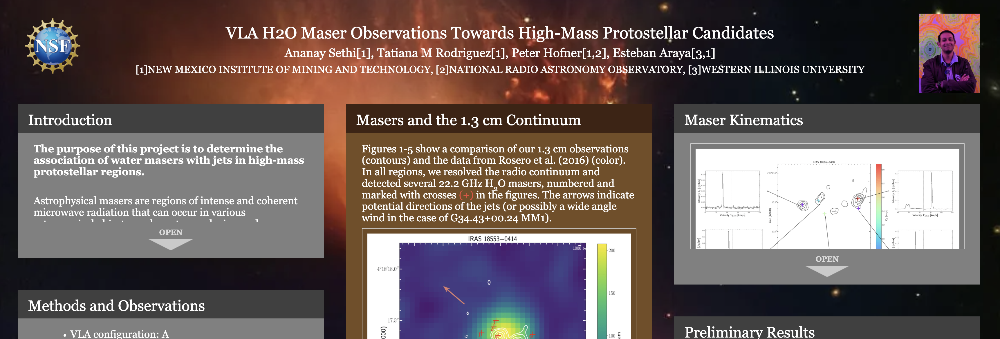
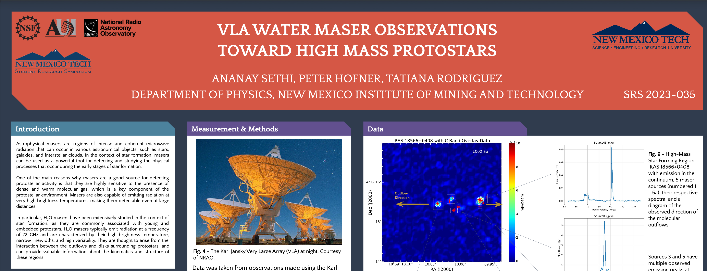

Graduate Researcher · Radio Astrophysics
Listening to the radio universe
I study massive protostellar jets using radio interferometry — tracing ionized outflows, mapping spectral indices, and probing the physics of shock acceleration in deeply embedded star-forming regions.

New Mexico Tech · Dept. of Physics
Graduate Student in Astrophysics
I'm a graduate student in astrophysics with a focus on the earliest stages of massive star formation. My work centers on understanding how protostellar jets interact with their surrounding environments — through radio continuum emission, maser activity, and molecular line tracers.
My primary target is IRAS 16562−3959, a luminous hot core driving a powerful ionized jet. I analyze multi-band VLA observations (S, C, X, Ku) to construct spectral index maps, model optical depth variations, and disentangle thermal bremsstrahlung from non-thermal synchrotron contributions.
I'm also interested in ammonia inversion transitions as probes of dense gas temperature and kinematics, and in radiative transfer modeling of hot core chemistry. On the technical side, I work extensively with CASA and AIPS, and enjoy modernizing legacy data reduction workflows in Python.
001
Multi-band radio continuum analysis of the IRAS 16562−3959 system, tracking free-free emission from the collimated jet and constraining mass-loss rates and ionization structure.
002
Band-to-band flux density comparisons across S, C, X, and Ku bands to map spectral index gradients — distinguishing optically thick and thin thermal regimes and identifying non-thermal components.
003
Investigating the role of internal working surfaces in protostellar jets as sites of particle acceleration, with a focus on the electron energy index (p ≈ 2.2) and its observational signatures.
004
Probing warm, dense gas in hot molecular cores through NH₃ inversion transitions. Connecting gas temperature structure to the protostellar luminosity and outflow feedback.
005
Using water and methanol maser spots to map the velocity field of the jet and disk system, anchoring the geometry of the outflow and constraining proper motion.
006
Developing reproducible, high-dynamic-range imaging pipelines in CASA — iterating phase and amplitude self-calibration to recover faint extended emission in complex fields.

iPosterAAS 245 · Jan 2025
Cosmic Beacons: Mapping Ammonia Masers in the W51 Star-Forming Region
View iPoster →
TalkNRAO Summer Research Program · Aug 2024
Cosmic Beacons: Mapping Ammonia Masers in the W51 Star-Forming Region
Open Slides →
Poster40th Annual New Mexico Symposium
VLA Continuum and Molecular Line Observations of Jets from High-Mass Protostars
Open PDF →
iPosterAAS 242 · Jun 2023
VLA H₂O Maser Observations Towards High-Mass Protostellar Candidates
View iPoster →
PosterNMT Student Research Symposium · SRS 2023-035
VLA Water Maser Observations Toward High Mass Protostars
Open PDF →American Astronomical Society Meeting Abstracts · Vol. 58 · #443.30 · Feb 2026
American Astronomical Society Meeting Abstracts #245 · Vol. 245 · #359.01 · Jan 2025
American Astronomical Society Meeting Abstracts #242 · Vol. 242 · #202.07 · Jun 2023
Open to discussions on radio interferometry, protostellar jet physics, or collaborative science.
Currently based at
New Mexico Tech
Department of Physics
Socorro, NM, USA
801 Leroy Place, Workman 306
Advisor: Peter Hofner
Star Formation/ISM Group
Open to collaboration & visitor discussions
IAU · AAS member
2025 · 01
A short excerpt or description of the post. This could be a research note, a technique you learned, or a reflection on a conference talk.
2025 · 02
A short excerpt or description of the post. Fill this in when you're ready to publish your first entry.
2025 · 03
Another placeholder. The card grid will expand automatically as you add more posts.